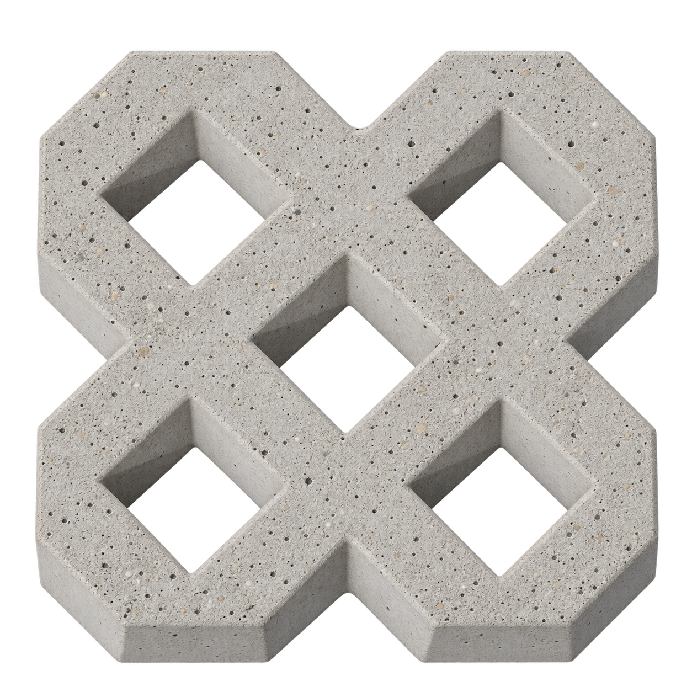
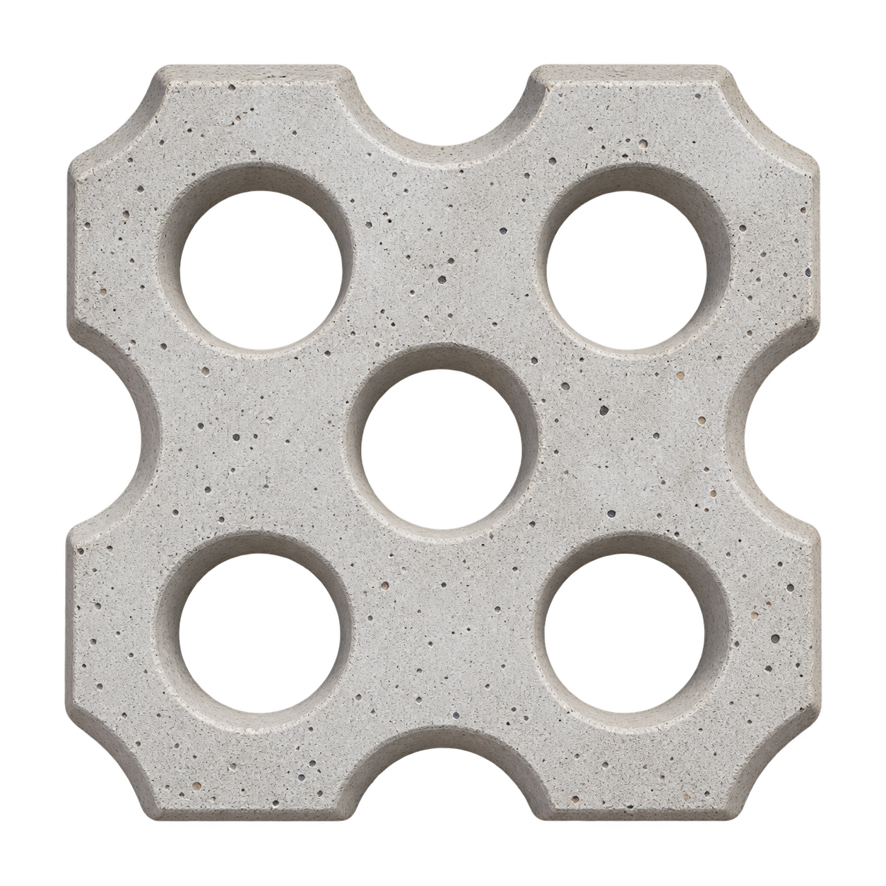
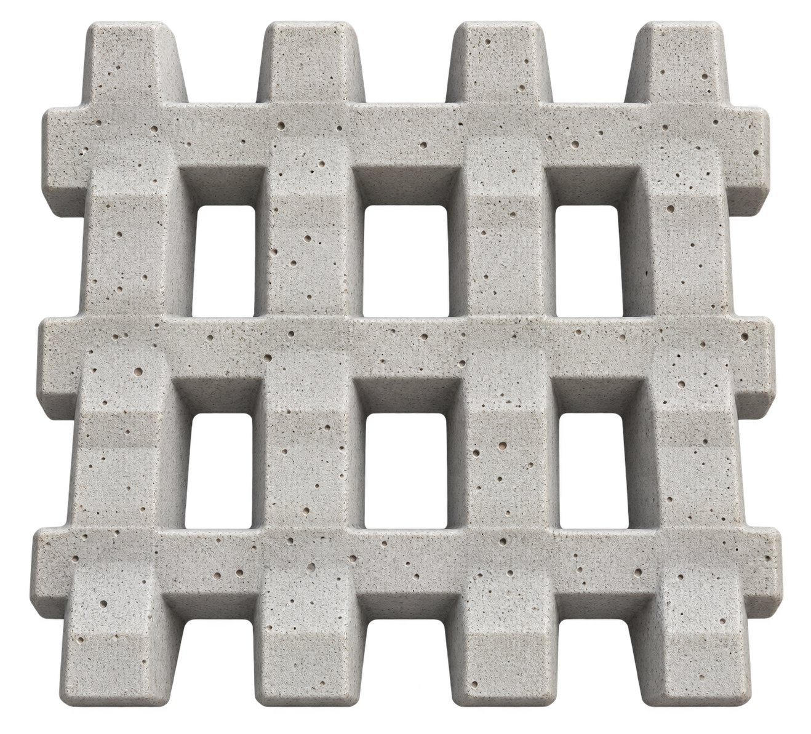

MODELO 01
Rombos
Una trama geométrica para integrar césped y hormigón.
Consultar modeloGarden Blocks y materiales para construir exteriores con carácter, resistencia y más verde.
Un acceso firme, un patio renovado o una cochera que se integra al jardín. Te ayudamos a elegir los materiales para darle forma a tu espacio.

Hormigón y naturaleza en equilibrio. Elegí el diseño para tu patio, acceso o estacionamiento.

Una trama geométrica para integrar césped y hormigón.
Consultar modeloDiseño abierto y líneas definidas para tus exteriores.
Consultar modelo
Una alternativa de formas suaves para espacios verdes.
Consultar modelo
Una trama regular de aberturas rectangulares.
Consultar modeloLos nombres describen la forma de cada diseño. Consultá medidas, espesor, disponibilidad y uso recomendado. Imágenes ilustrativas de los modelos.
Transformá tus exteriores con superficies que combinan funcionalidad, diseño y césped.
Consultanos por tu obraAccesos, jardines y cocheras: cada espacio tiene su propia manera de transformarse.